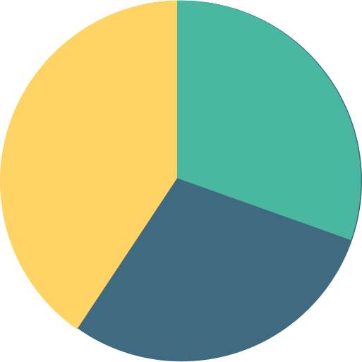
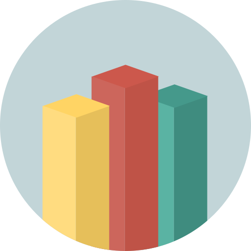
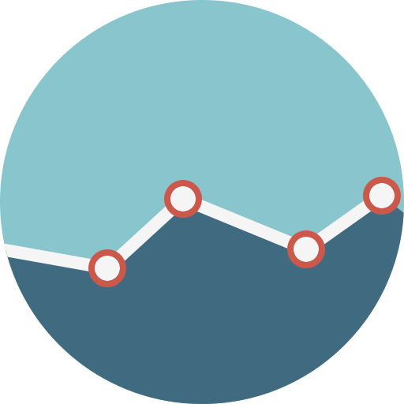

Tipos de Vizualizações
Modelos de gráficos e vizualizações para análise de dados e de indicadores

Gráfico de Pizza
Os gráficos de pizza também podem ser chamados de gráficos de setores ou gráficos circulares. São utilizados para visualizar partes de um todo.

Gráfico de Barras
Gráficos de barras são úteis para comparar categorias: o eixo X representa a categoria e o eixo Y representa o valor a comparar.

Gráfico de Linha
Os gráficos de linhas costumam ser usados para mostrar dados contínuos, ou seja, que não podem ser contados em números inteiros.
Contato:
elias.jardelfernandes@hotmail.com